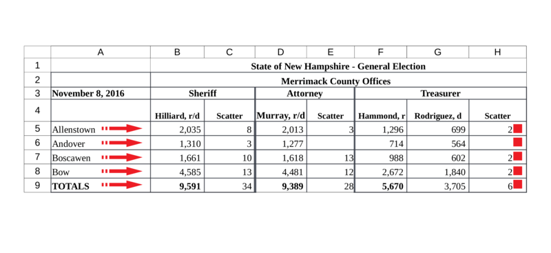

Working with Spreadsheets
excel.RmdThis vignette demonstrates the extraction of election results from Excel and CSV files using the medslcleaner package. We introduce the available tools and show solutions for common spreadsheet layouts.
Tutorial
The following is an excerpt from the Excel-formatted source data for Merrimack, New Hampshire.

Problem
Reading this sheet into R as if it were ordinary tabular data doesn’t work very well.
library(dplyr)
library(stringr)
library(readxl)
merrimack_path = excel_example_path('merrimack')
read_excel(merrimack_path, col_names = FALSE) %>%
head()## # A tibble: 6 x 8
## ..1 ..2 ..3 ..4 ..5 ..6 ..7 ..8
## <chr> <chr> <chr> <chr> <chr> <chr> <chr> <chr>
## 1 <NA> State of New Ham… <NA> <NA> <NA> <NA> <NA> <NA>
## 2 <NA> Merrimack County… <NA> <NA> <NA> <NA> <NA> <NA>
## 3 42682 Sheriff <NA> Attorn… <NA> Treasu… <NA> <NA>
## 4 <NA> Hilliard, r/d Scatt… Murray… Scatt… Hammon… Rodrig… Scat…
## 5 Allenstown 2035 8 2013 3 1296 699 2
## 6 Andover 1310 3 1277 <NA> 714 564 <NA>Notice:
Multiple header rows: The jurisdiction is in row
2. Row3indicates offices. Row4gives candidates. We refer to these rows as header rows, and their non-blank cells as header cells.Multiple-column or “merged” cells: the header cells with values
Sheriff,Attorney, andTreasurerare associated with both of the two columns beneath them. But under this approach, the header cell values appear only above the first column.
Solution
Here’s where we’re going:
# Instead of `read_excel`, `read_xlreturns`
d = read_xlreturns(merrimack_path)
# The main function for reshaping Excel data is `as_idcol`
d = d %>%
as_idcol('jurisdiction', i = 2, j = 2, down = TRUE, right = TRUE) %>%
as_idcol('precinct', j = 1, right = TRUE) %>%
as_idcol('office', i = 3, right = TRUE, down = TRUE) %>%
as_idcol('candidate', i = 4, down = TRUE)
# Drop remaining header rows and `finalize`
d = d %>%
filter(row > 4 & col> 1) %>%
finalize()
head(d)## votes jurisdiction precinct office candidate
## 1: 2035 Merrimack County Offices Allenstown Sheriff Hilliard, r/d
## 2: 8 Merrimack County Offices Allenstown Sheriff Scatter
## 3: 2013 Merrimack County Offices Allenstown Attorney Murray, r/d
## 4: 3 Merrimack County Offices Allenstown Attorney Scatter
## 5: 1296 Merrimack County Offices Allenstown Treasurer Hammond, r
## 6: 699 Merrimack County Offices Allenstown Treasurer Rodriguez, dSome cleaning up remains, but the heavy lifting is done in fewer than 10 lines.
Steps
Reading from the disk
We read the data with function read_xlreturns.
d = read_xlreturns(merrimack_path, sheet = 1)
# Take a look
d %>%
select(address, row, col, value) %>%
head()## address row col value
## 1: A1 1 1 <NA>
## 2: B1 1 2 State of New Hampshire - General Election
## 3: C1 1 3 <NA>
## 4: D1 1 4 <NA>
## 5: E1 1 5 <NA>
## 6: F1 1 6 <NA>Spreadsheet data in R
Consider how the spreadsheet is now represented in R. Each element in the value column gives the contents of a single spreadsheet cell. Columns row and col indicate the row and column of that cell. (Excel identifies columns with letters, but we use numbers.)
This format will turn out to be convenient, but right now the relationship between headers and vote cells is unclear.
Associating headers with vote cells
Our task is to specify all of the relationships between header cells and vote cells. We do this with the as_idcol function. It adds a new column to the data that takes its values from header cells – for all the vote cells we specify as associated with that header.
We can select header cells by their row and column indexes. (Or in more difficult spreadsheets with logical functions, as discussed later.) as_idcol takes arguments i and j for row(s) and column(s). For example, if we specified i = 2, the values of the second row in the spreadsheet would be considered header values. With both i = 2 and j = 1, we could define the cell in the second row and first column as a header cell. So i and j define part of the relationship between headers and votes – by identifying which cells are headers.
We identify the vote cells associated with a header by giving directions from the header cell. We can move rightward in the spreadsheet from a header cell, associating it with all the vote cells in the spreadsheet row to its right. We can move downward, linking the header with the vote cells below its spreadsheet column. Or, we can do both at once, associating a header with all the vote cells under it and to the right. The arguments right and down control this behavior.
What makes this operation powerful for extracting data from spreadsheets is our ability to specify more than one row in i or column in j.
The source cell or cells then drop from the data (by default).
Consider again the precinct names in column 1 of the Merrimack spreadsheet. To associate them with all the vote counts to their right, we do this:
We just created a new variable precinct that takes as values the contents of cells where j is 1 (otherwise NA), for all the vote cells to their right in the spreadsheet.
Defining cells as headers causes them to drop them from the spreadsheet data (by default) after moving their values into the new identifier column in the spreadsheet data. One way to think of the as_idcol function is as transformation of headers from spreadsheet cells into characteristics of spreadsheet cells.

The result is this:
## address row col precinct
## 1 B5 5 2 Allenstown
## 2 C5 5 3 Allenstown
## 3 D5 5 4 Allenstown
## 4 E5 5 5 Allenstown
## 5 F5 5 6 Allenstown
## 6 G5 5 7 AllenstownLet’s do the remaining identifiers:
d = d %>%
as_idcol('jurisdiction', i = 2, j = 2, down = TRUE, right = TRUE) %>%
as_idcol('office', i = 3, right = TRUE, down = TRUE) %>%
as_idcol('candidate', i = 4, down = TRUE)Finally, to keep only the columns we created and rename the value column votes:
## votes precinct jurisdiction office candidate
## 1: 2035 Allenstown Merrimack County Offices Sheriff Hilliard, r/d
## 2: 8 Allenstown Merrimack County Offices Sheriff Scatter
## 3: 2013 Allenstown Merrimack County Offices Attorney Murray, r/d
## 4: 3 Allenstown Merrimack County Offices Attorney Scatter
## 5: 1296 Allenstown Merrimack County Offices Treasurer Hammond, r
## 6: 699 Allenstown Merrimack County Offices Treasurer Rodriguez, dTo finish processing this data per the MEDSL schema for precinct returns, there’s a bit more work to do. We’d clean up the values of jurisdiction as Merrimack County, and split the party abbreviations in the candidate column (e.g., r and d) into their own party column. But we’ve reached our goal of parsing the Excel file into a tidy dataframe.
This ends the tutorial. The sections that follow demonstrate solutions for more difficult spreadsheets. In particular, they introduce more flexible ways of specifying arguments i and j: using functions to select the desired rows and columns.
Multiple tables per spreadsheet (WIP)
In the complete New Hampshire precinct returns, each spreadsheet contains many tables like the one used in the tutorial, stacked vertically …
[figure]
The split_cells function searches cell values for a pattern, and splits the spreadsheet along the rows that contain matches. It returns a list of single tables that we can iterate over. An effective pattern for splitting the Merrimack sheet is TOTALS. It matches rows 9, 17, and 26 in column 1. Each of these rows ends a table.
The output indicates that the result is a split into three tables: the first split extends from row 1 through the first pattern match in row 9; the second split begins in row 10 and ends with the next match in row 17, and so on. Our pattern identified the rows that end tables, so we specified starts = FALSE. If instead we saw a pattern indicating the starts of tables, we would use the default starts = TRUE. (One such pattern is 'sheriff|register|commissioners', which gives ranges 3:10, 11:18, and 19:26.)